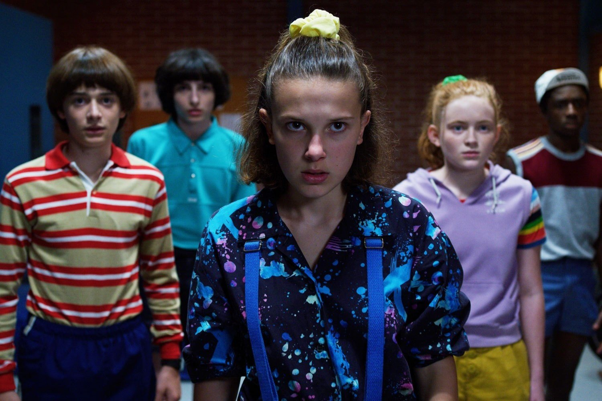
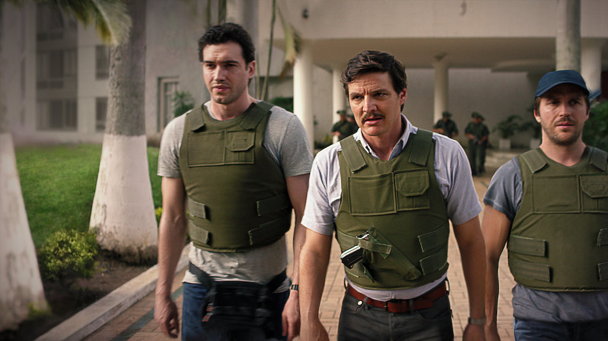

Czarnobyl
Pięcioodcinkowy miniserial HBO stworzony przez Craiga Mazina i wyreżyserowany przez Johana Rencka. Przedstawia on fabularyzowaną historię katastrofy elektrowni jądrowej w Czarnobylu. Każdy odcinek przerażająco dobrze odzwierciedla niepewność, strach i tragedię, którą odczuwali bohaterowie (i anty-bohaterowie) tamtych zdarzeń i zarazem niesamowicie wciąga widza w historię każdej z tych osób.

Stranger Things
Stworzony dla platformy Netflix amerykański serial internetowy, usytuowany w latach 80tych horror science-fiction. Pierwszy sezon opowiada historię niewyjaśnionego zaginięcia Willa Byersa, co jest nietypowym dla nadzwyczaj spokojnego miasteczka Hawkins zdarzeniem. Szybko okazuje się, że sytuacja jest zdecydowanie bardziej nadprzyrodzona i skomplikowana, niż wszystkim się wydawało, a widz poznaje nową postać - El.

Breaking Bad
Uznawany za jeden z najlepszych seriali wszechczasów - Breaking Bad opowiada historię pogardzanego przez życie nauczyciela chemii, który po dowiedzeniu się o tym, że ma raka, postanowił rozpocząć produkcję metaamfetaminy, by zapewnić (przynajmniej w początkowym zamyśle) swojej rodzinie zabezpieczenie finansowe. Szybko zostaje on jednak skorumpowany przez władzę i pogrąża się w coraz większym chaosie.

Narcos
Netflix Original opowiadający w fabularyzowany sposób o historii kartelów z Medellin i Cali. W pierwszych dwóch sezonach akcja skupia się na wzlocie, upadku jednego z najsłynniejszych baronów narkotykowych na świecie - Pablo Escobara oraz dwóch agentów DEA próbujących złapać Pablo i rozbić jego operację.
